地政学
ルサカは内陸国ザンビアの首都として、銅輸出回廊、南部アフリカ外交、COMESA、コンゴ民主共和国やタンザニア方面の物流を調整します。省庁、国会、国際会議場が近く、地域協力と資源政策が日常の物価に響きます。重要です。
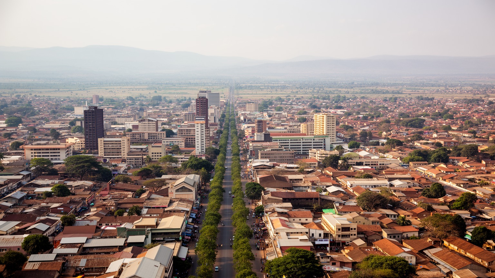
🇿🇲 ザンビア / 首都ルサカ / World City Atlas
ザンビア中央高原に広がる首都です。国会、省庁、鉱業と農業を扱う企業、COMESAの地域外交、市場、コンパウンド、教会、大学、急増する若い人口が、内陸国の現在を映しています。
中央高原の首都
ルサカは鉱山都市ではありませんが、銅産業、農業、金融、国際会議、広域道路を扱う国家の操作盤です。市場と官庁街、郊外住宅とコンパウンドが近接し、成長の速さと公共サービスの不足が同じ街に現れます。
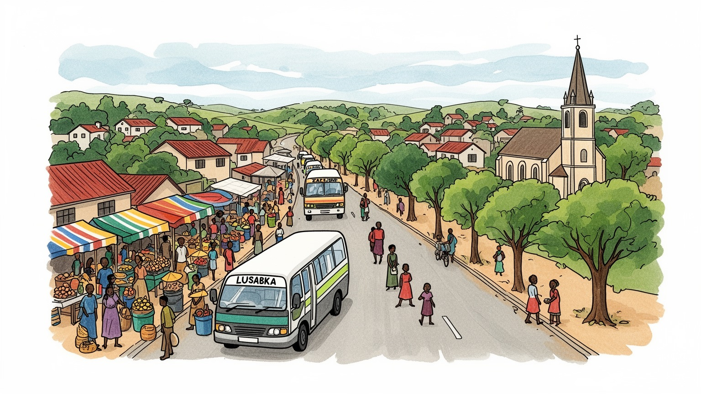
ルサカは内陸国ザンビアの首都として、銅輸出回廊、南部アフリカ外交、COMESA、コンゴ民主共和国やタンザニア方面の物流を調整します。省庁、国会、国際会議場が近く、地域協力と資源政策が日常の物価に響きます。重要です。
雇用は行政、金融、商業、建設、通信、物流、教育、医療、非公式小売に広がります。銅鉱山は北のカッパーベルトに多いですが、契約、税制、輸入、融資、人材は首都で動き、若者の仕事探しが大きな課題です。課題です。
キリスト教会、ペンテコステ派、カトリック、ヒンドゥー寺院、イスラムの祈りが街を刻みます。ニャンジャ語、ベンバ語、英語、トンガ語が交わり、音楽、食堂、市場、サッカーが多民族の首都をつないでいます。日常です。
住民はミニバス、徒歩、タクシー、露店、ショッピングモール、教会、学校を使い分けます。旅行者は国立博物館、市場、郊外の野生動物保護区、日曜礼拝、食文化から、急成長する首都の素顔に近づきます。旅になります。
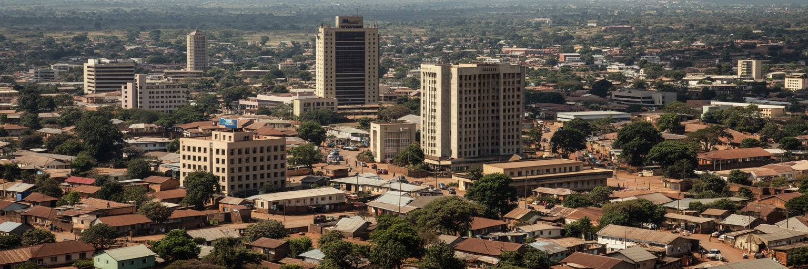
ルサカは、ザンビア中央高原の標高約千二百八十メートルに広がる首都です。海に面した港ではなく、鉄道と道路、行政の判断によって発展した内陸都市であり、気候は同じアフリカ南部の低地都市より涼しさを感じる季節があります。雨季には街路樹と庭が濃い緑になり、乾季には砂ぼこり、朝晩の冷え、強い日差しが日常の感覚を作ります。都市の形は、植民地期の計画都市、独立後の官庁街、商業中心、郊外住宅、未計画に広がったコンパウンドが重なってできています。カイロ・ロード周辺のビル、ステートハウスや国会へ向かう広い道、カブワタやチレンジェの生活圏、さらに外側へ延びる住宅地を見ると、首都の成長が一方向ではないことが分かります。高原の位置は、南北東西の幹線道路を束ねる利点を持つ一方、急増する人口に水、排水、道路、廃棄物処理を届ける難しさも抱えます。ルサカの地理は、内陸国が港を持たずに外部世界と接続するための努力を映します。都市を読む時は、中心部のビルだけでなく、雨季の泥道や乾季の水くみ、郊外の区画整理まで見る必要があります。標高の高さは過ごしやすさを生みますが、都市の広がりは移動距離を伸ばし、公共交通と水道の整備を急がせます。高原の明るい空の下で、首都は毎日少しずつ外側へ押し出されています。そこに成長の速度が見えます。
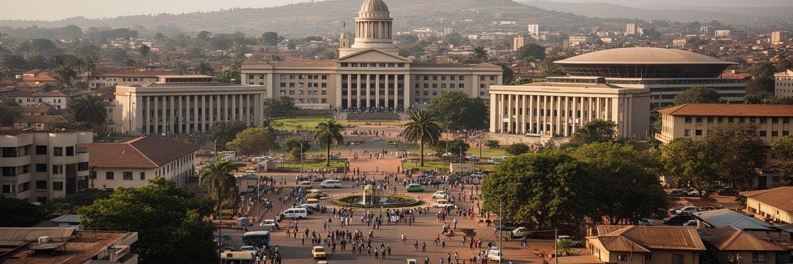
ルサカはザンビアの国会、大統領府、省庁、最高裁、大使館、国際機関が集まる政治都市です。独立後の国家建設だけでなく、南部アフリカの解放運動、地域外交、難民受け入れ、和平交渉の記憶も持っています。現在の首都は、COMESA本部や国際会議施設を通じて、東南部アフリカの貿易、税関、農業、電力、交通、保健をめぐる協議の場にもなります。内陸国であるザンビアは、コンゴ民主共和国、タンザニア、マラウイ、モザンビーク、ジンバブエ、ボツワナ、ナミビア、アンゴラ方面の回廊と関わり、港湾や国境の状態が国内経済に直結します。首都で決まる燃料税、鉱業税、債務交渉、農業補助、社会保障は、市場のメイズ粉やバス運賃にも届きます。一方、政治の中心がルサカに集中するほど、地方の声や鉱山地域、農村部の不満をどう吸い上げるかが問われます。選挙、抗議、報道、宗教指導者の発言、市民団体の活動は、首都の公共空間を緊張させることもあります。ルサカを政治都市として見ることは、建物の配置を知るだけではありません。国家の決定が若者の就職、農家の収入、輸入品の価格、都市周辺の土地へどう届くかを読むことです。会議場で語られる地域統合は、国境を越えるトラック運転手、輸入業者、市場の売り手にとって現実の手続きです。政治の言葉が道路と価格に変わる場所として、ルサカは重要です。
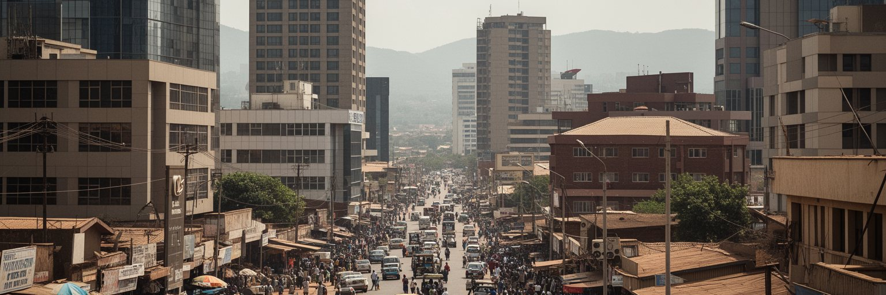
ザンビア経済の大きな柱は銅であり、主要な鉱山や製錬の現場はカッパーベルトや北西部にあります。それでもルサカは、鉱山都市ではない形で鉱業経済を動かします。省庁、税務、銀行、法律事務所、商社、保険、物流企業、国際金融機関、コンサルタントが集まり、鉱業契約、輸出、設備輸入、環境規制、人材、外貨、債務を扱います。銅価格が上がれば国家歳入や建設投資に期待が生まれ、下がれば通貨、雇用、公共支出への不安が強まります。首都のショッピングモールや建設現場の活気も、遠い鉱山の生産と国際市況に影響されます。一方、銅に依存しすぎる経済は、農業、製造業、観光、サービス業をどう伸ばすかという課題を常に抱えます。ルサカでは、IT、通信、金融、教育、医療、飲食、小売、物流、政府調達が雇用を広げていますが、安定した正式雇用に届かない若者も多いです。非公式な販売、修理、配送、日雇い建設、家事労働は、都市を支える重要な労働でありながら、社会保障や信用へのアクセスが弱くなりがちです。首都の経済を読む時は、銅の輸出額だけでなく、その富が学校、道路、住宅、電力、雇用の質へどう戻るかを見る必要があります。鉱業収入が公共投資へ結びつく時、首都の道路や病院は改善しますが、価格変動に頼る財政は暮らしを不安定にします。ルサカはその期待と脆さを同時に抱える経済の窓口です。
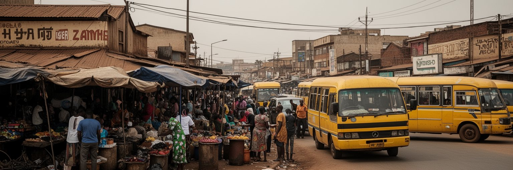
ルサカの経済を足元で支えるのは、市場、露店、ミニバス乗り場、修理屋、仕立て屋、食堂、携帯電話販売、野菜売り、建設現場、家事労働です。シティ・マーケット、カムワラ、ソウェト市場のような場所では、農村から届くメイズ、野菜、豆、魚、古着、輸入品、日用品が細かく売買されます。大型ショッピングモールが増えても、多くの住民にとって市場は価格交渉、少量購入、信用、情報交換の場です。女性は食品販売、調理、家計管理、子育て、親族支援を通じて都市経済を強く支えますが、その労働は統計に表れにくいです。若い男性はミニバス、荷運び、警備、建設、修理、配送などで収入を探し、日々の現金の有無が家賃や食費を左右します。市当局にとって露店は交通や衛生の課題にもなりますが、取り締まりだけでは生活の安全網を壊してしまいます。日陰、トイレ、排水、保管場所、防火、廃棄物回収、手ごろな店舗区画が整えば、非公式な仕事はより安全で生産的になります。ルサカの市場は、地方農業、越境商業、都市貧困、食文化、政治のうわさが交差する公共空間です。ここを見れば、首都の成長が誰の手で支えられているかが分かります。朝の荷下ろし、昼の値段交渉、夕方の売れ残り処理まで、時間ごとに労働の表情は変わります。市場を整えることは、低所得者の所得を守る都市政策でもあります。
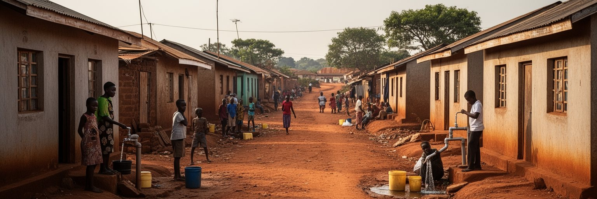
ルサカの人口増加は、都市の外縁を大きく変えています。計画された郊外住宅、ゲート付き開発、ショッピングモール周辺の新しい区画が広がる一方、未計画に形成されたコンパウンドでは、土地権利、水道、排水、道路、廃棄物、学校、診療所が不足しやすいです。カニャマ、マテロ、チペタ、ジョージ、ミシシなどの地区名は、住宅問題だけでなく、移住者の努力、家族の支え、小商い、教会、若者文化の場としても読めます。安い住まいは都市で働くための入口ですが、洪水、火災、感染症、長い通勤、過密な教室を伴うことがあります。土地は資産であり、投機の対象であり、生活の安全そのものでもあるため、区画整理や立ち退きは住民の不安を強めます。中所得層が郊外へ移ると、自家用車への依存、交通渋滞、インフラ維持費も増えます。都市計画が人口増加に追いつかない時、家族や近所の互助が公共サービスの不足を埋めますが、それは女性や子どもの時間を奪うことにもなります。ルサカの住宅を読む時は、建物の質だけでなく、水を得る距離、学校までの道、雨季の排水、夜の安全、家賃と収入の釣り合いを見ます。住まいの差は、首都で得られる機会の差でもあります。新しい住宅地が広がるほど、通勤費と時間は家計の大きな負担になります。土地の正規化、排水、公共交通、近所の学校を同時に整えることが、都市拡大を生活の改善へ変える条件です。
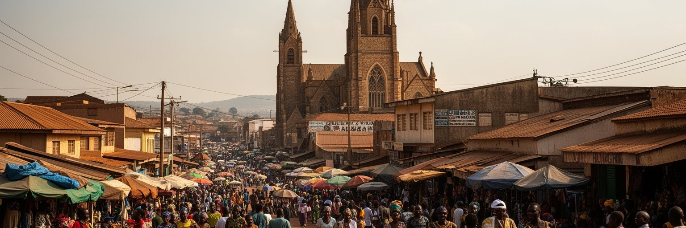
ルサカの文化は、多民族国家ザンビアの縮図です。英語は行政と教育の言語ですが、街ではニャンジャ語、ベンバ語、トンガ語、ロジ語、ルンダ語などが混ざり、都市的な言い回しが生まれます。教会は日曜日の礼拝だけでなく、学校、相談、音楽、結婚、葬儀、政治的な発言、相互扶助の場として大きな役割を持ちます。ペンテコステ派、カトリック、プロテスタント、独立教会に加え、イスラム、ヒンドゥー、シーク、バハイなどのコミュニティもあり、移民や商人の歴史を感じさせます。ゴスペル、ザムロックの記憶、カリンドゥラ、ヒップホップ、ダンスホール、サッカー中継、街角の食堂は、若い首都の感情を表現します。文化は観光施設だけにあるのではなく、ミニバスの会話、結婚式の布、マーケットの食材、学校の制服、教会の合唱、近所のサッカー場にあります。一方で、宗教的価値観とジェンダー、性的少数者、若者の自由、政治参加をめぐる緊張も存在します。多様な信仰と言語が同じ都市で暮らすには、寛容さだけでなく、学校、職場、メディア、公共サービスでの公平な扱いが必要です。ルサカの文化を読むことは、国家の一体感が日常の小さな翻訳によって作られる過程を見ることです。言葉を切り替えながら商売し、祈り、歌い、応援する姿は、都市の混雑を柔らかく調整します。文化は首都の騒がしさを共有可能なリズムへ変えています。
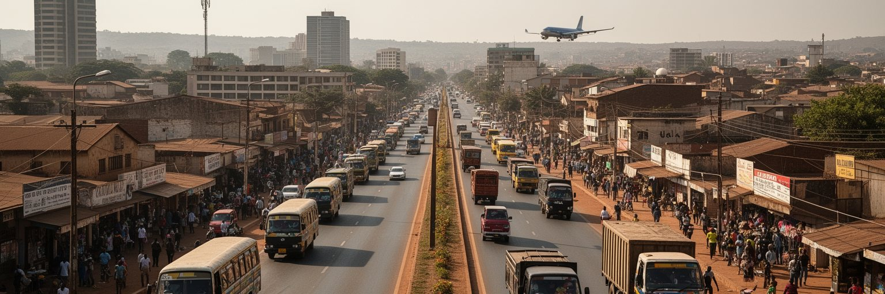
ルサカは、ザンビアの道路網と航空網を束ねる内陸物流の中心です。グレート・ノース・ロードやグレート・イースト・ロード、南部へ向かう回廊、ケネス・カウンダ国際空港が、首都をカッパーベルト、タンザニア、マラウイ、モザンビーク、ジンバブエ、ボツワナ、ナミビア方面へつなぎます。銅、燃料、肥料、食料、建材、機械、医薬品は、港と国境を通る長い経路を経て首都へ届きます。市内ではミニバス、タクシー、徒歩、自家用車が移動を支えますが、渋滞、交通事故、排気、歩道不足、雨季の道路損傷が暮らしの負担になります。新しい環状道路や幹線整備は物流を助けますが、低所得者が遠い住宅地から通勤する費用と時間も増えています。交通は経済だけでなく、都市の公平さに直結します。学校や病院に行くための乗り換え、早朝や夜間の安全、障害のある人の移動、女性の帰宅、露店と歩行者の場所取りまで、移動の質は生活の質です。ルサカを交通都市として読むと、内陸国の弱さと強さが見えます。海がないため外部への距離は長いですが、道路と国境協力を整えれば、周辺国と市場を結ぶ結節点にもなります。首都の道路は、国家が世界経済に接続する道であり、近所の通学路でもあります。バス停の日陰、歩道の連続性、運賃の安定、貨物車と歩行者の分離は小さく見えて重要です。移動を整えることは、仕事と学びへの距離を縮める政策です。
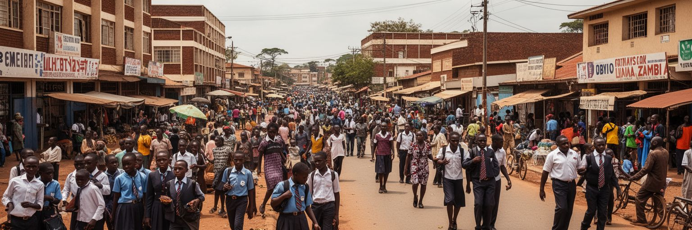
ルサカは若い都市です。ザンビア全体の人口は若く、首都には地方から学びや仕事を求める若者が集まります。ザンビア大学、専門学校、職業訓練校、私立大学、病院、研究機関、NGO、企業の研修は、将来への入口になります。しかし学費、住居費、交通費、通信費が重く、学歴を得ても十分な仕事に結びつかない場合があります。若者は小売、配送、建設、コールセンター、警備、音楽、デジタル販売、起業で道を探しますが、資本や信用、安定した契約に届きにくいです。教育の質は地区によって差があり、過密な教室、教員不足、家庭の負担、女子教育、早い妊娠、失業、薬物、犯罪への不安が重なります。医療面では、都市部でサービスが集中する一方、貧しい地区では診療所までの距離、待ち時間、費用、水と衛生の問題が健康を左右します。コレラなど水系感染症の記憶は、排水、廃棄物、給水が教育や経済と同じくらい重要であることを示します。若い人口は都市の活力ですが、機会が不足すれば不満にも変わります。ルサカの未来は、大きな会議場やモールだけでなく、学校から職場へ移る道、若者が安全に集まれる場所、女性が学び続けられる環境にかかっています。公共図書館、スポーツ場、訓練施設、安い通信環境は、若者の時間を希望へ変える基礎です。都市が若さを受け止められるかが、首都の安定を決めます。
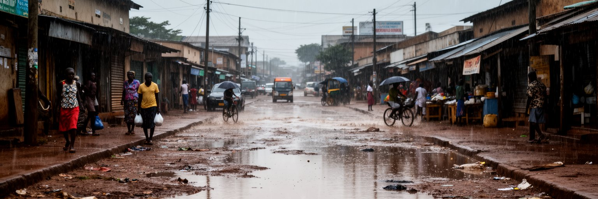
ルサカの暮らしは、水と衛生の条件に強く左右されます。雨季には短時間の強い雨が道路を冠水させ、排水路や低地の住宅地に負担をかけます。乾季には水の確保、ほこり、暑い午後と涼しい夜、家庭の貯水が日常の感覚になります。地下水に頼る地域、共同水栓、井戸、排水が不十分な地区では、飲み水の安全とトイレの管理が健康を左右します。都市が急速に広がるほど、下水道、廃棄物収集、排水溝、道路舗装、雨水の逃げ道が不足し、貧しい地区ほど被害を受けやすくなります。コレラ流行の経験は、衛生が個人の努力だけでは守れない公共インフラであることを示しています。気候変動で雨の強さや乾燥の長さが不安定になれば、都市農業、食料価格、道路補修、学校の通学、屋外労働にも影響します。木陰や公園、透水性のある地面、排水路の清掃、廃棄物管理、早期警報、コミュニティの衛生教育は、豪華な事業ではなく都市の基礎です。ルサカの気候リスクを読む時、洪水の写真だけでなく、水を運ぶ時間、病院の待合、雨後の通学路、露店の営業停止まで見る必要があります。水の管理は、首都の公平さと行政能力を測る最も身近な指標です。家の前の排水溝が詰まるかどうか、給水が何時間続くかは、都市政策が家庭に届く瞬間です。衛生の改善は命を守り、子どもの学びの時間も守ります。暮らしを守ります。
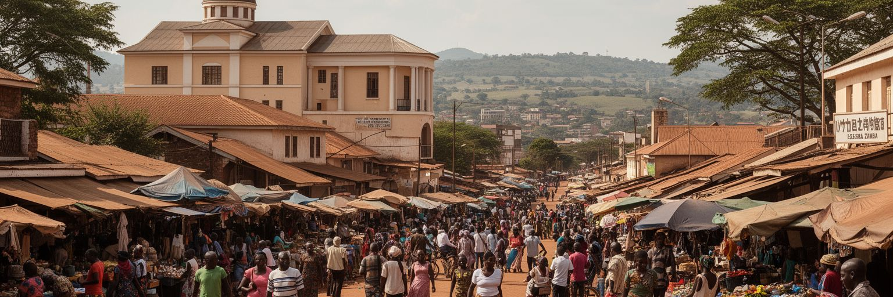
ルサカ観光は、ヴィクトリア滝や国立公園へ向かう前後の通過点として扱われがちです。しかし首都を数日歩くと、ザンビアの政治、商業、信仰、若者文化、食の現在が見えてきます。ルサカ国立博物館では独立、芸術、民族文化の入口を得られ、カブワタ文化村や市場では工芸品、布、食器、木彫り、日用品を通じて作り手と商人の生活に触れられます。郊外にはムンダ・ワンガ環境公園やルサカ国立公園があり、都市近くで自然保護と観光の関係を考えられます。食堂ではニシマ、野菜、魚、肉、豆料理を味わい、教会の礼拝やサッカー観戦は街のリズムを感じる機会になります。旅行者は治安、移動手段、写真撮影、宗教施設での礼儀、市場での交渉、雨季の道路状況に配慮する必要があります。ルサカの魅力は、巨大な記念物よりも、内陸首都が国の各地から人、商品、言葉、希望を集める様子にあります。観光収入がガイド、運転手、工芸家、食堂、市場の店へ残る形で訪れることも大切です。首都を急いで通り過ぎず、朝の市場、午後の博物館、夕方の食堂をゆっくり見ると、ザンビアの旅はより立体的になります。空港から中心部までの道、モールの明かり、市場の混雑、郊外の緑を連続して見ることで、旅人は首都の多面性を理解できます。ルサカはザンビアを始める入口です。短い滞在でも、移動の合間に街の声を聞けます。
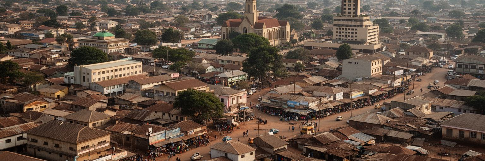
ルサカは、世界の巨大金融都市のような規模ではありません。それでも世界都市の地図に置く意味があるのは、鉱物資源に支えられる国家経済、内陸物流、若い人口、住宅拡大、宗教の公共性、地域外交、都市貧困が一つの首都に集まっているからです。銅の価格、国際債務、国境の通関、燃料価格、雨季の排水、学校の過密、教会の声、市場の小商いは、それぞれ別の話に見えて同じ都市で結びついています。中心部の官庁街だけを見れば国家の顔が見えますが、コンパウンドの水道、市場の売上、若者の通勤、郊外の新興住宅、空港へ向かう道路まで見ると、首都の本当の課題が分かります。ルサカの重要性は、GDPの大きさだけでは測れません。資源の富をどう社会へ戻すか、若い人口へ仕事と学びをどう用意するか、内陸国の距離を道路と外交でどう縮めるか、都市の拡大を公共サービスでどう支えるかが問われています。ルサカを読むことは、成長するアフリカ都市の希望と負担を同時に見ることです。市場で値段を聞くこと、雨上がりの道を歩くこと、教会の歌を遠くに聞くことが、首都の統計を生活の感覚へ変えてくれます。都市の強さは、危機の中でも商いを続け、学び、祈り、家族を支える人々の反復にあります。ルサカはその反復から未来を組み立てる首都です。だから小さな街路の変化も、国の方向を示します。